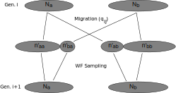
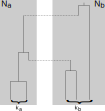
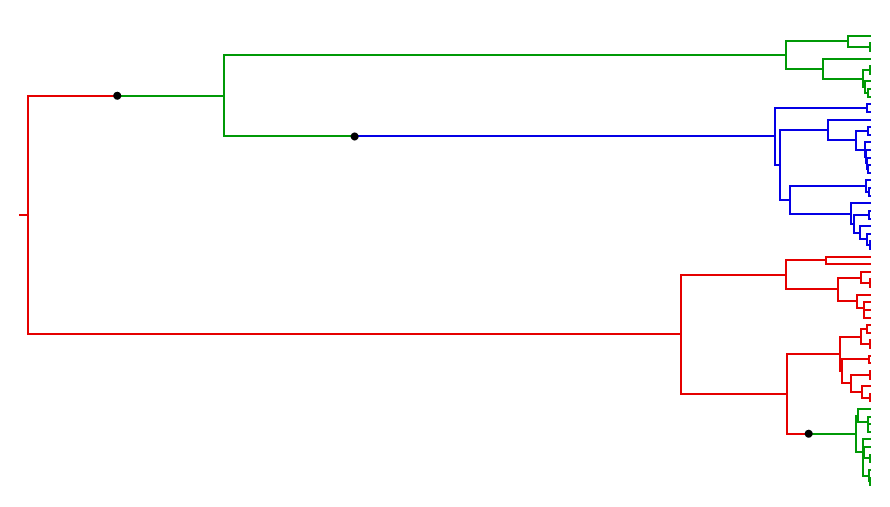
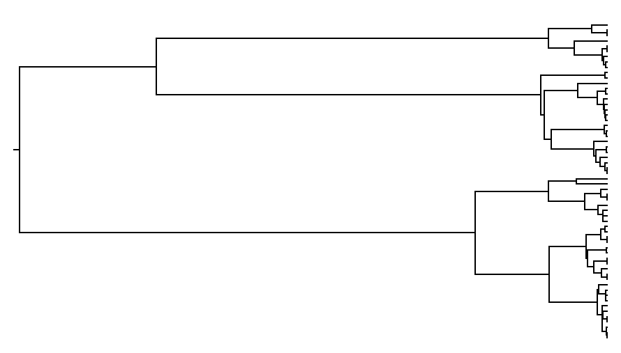

Master equations
- Describe probability distribution of continuous-time "jump" processes.
- Form can be derived directly from the Chapman-Kolmogorov equation:
$$p(x_3,t_3|x_1,t_1) = \sum_{x_2}p(x_3,t_3|x_2,t_2)p(x_2,t_2|x_1,t_1)$$
for any $t_3>t_2>t_1$, where $p(x_1,t_1)\equiv P(X(t_1)=x_1)$.
Derivation:
- $\partial_t p(x,t|x_0) = \lim_{\Delta\rightarrow 0}\frac{1}{\Delta}\left(p(x,t+\Delta|x_0)-p(x,t|x_0)\right)$ (Definition)
- $p(x,t+\Delta|x_0)=\sum_{x'}p(x,t+\Delta|x',t)p(x',t|x_0)$ (CKE)
- $p(x,t+\Delta|x',t) \rightarrow \delta_{x,x'} + \Delta W(x|x')$ for small $\Delta$ (Assumption)
- Then $p(x,t+\Delta|x_0) = p(x,t|x_0) + \Delta\sum_{x'}W(x|x')p(x',t|x_0)$
- and $\partial_t p(x,t|x_0) = \sum_{x'}W(x|x')p(x',t|x_0)$.
$\partial_t p(x,t|x_0) = \sum_{x'\neq x}W(x|x')p(x',t|x_0) - \sum_{x'\neq x}W(x'|x)p(x,t|x_0)$
For $x'\neq x$, the quantity $\Delta W(x'|x)$ is the probability of the system transitioning from state $x$ to state $x'$ in the time interval $\Delta$. (The transition rate.)
Birth-death master equations
Suppose $\vec{X}(t)$ describes the state of a system composed of distinct sub-populations $i$ each containing $X_i(t)$ individuals evolving under a continuous-time Markov process. Call this a birth-death process if these counts can only increase or decrease by finite amounts in a given event.
$$W(\vec{x}'|\vec{x})=
\delta_{\vec{x}',\vec{x}+\vec{v}_1}T_1(\vec{x})
+ \delta_{\vec{x}',\vec{x}+\vec{v}_2}T_2(\vec{x})
+ \ldots$$
where
- $T_k(\vec{x})$ is the probability per unit time of event $k$ occuring given $\vec{X}(t)=\vec{x}$
and
- $\vec{v}_k$ is the increment applied to the system state by event $k$.
Then,
$$\partial_t p(\vec{x},t|\vec{x}_0)=\sum_k\left[T_k(\vec{x}-\vec{v}_k)p(\vec{x}-\vec{v}_k|\vec{x}_0)
- T_k(\vec{x})p(\vec{x},t|\vec{x}_0)\right]$$
and the mean dynamics are
$$\partial_t\langle \vec{X}(t)\rangle = \sum_k \vec{v}_k\langle T_k(\vec{X}(t))\rangle
\simeq \sum_k\vec{v}_k T_k(\langle\vec{X}(t)\rangle)$$
Chemical master equations
Consider the chemical reaction
$$r_1 A_1 + r_2 A_2 + \ldots \overset{\lambda}{\longrightarrow} p_1 A_1 + p_2 A_2 + \ldots$$
where $r_i$ and $p_i$ specify the (integer) number of $A_i$ particles involved on the reactant and product sides, respectively.
Assuming the reaction is occuring in a well-mixed volume and that any interaction of the reactants has a fixed probability of resulting in a reaction, might use $X_i$ to describe the number of $A_i$ and have it evolve under a birth-death process with
$$T(\vec{x})=\lambda\prod_i \frac{x_i!}{(x_i-r_i)!}$$
We call master equations describing these processes "chemical master equations".
Note that since the reaction notation uniquely specifies the transition
rate $T(\vec{x})$, and the transition rate uniquely specifies the master
equation, reaction notation can be used to precisely specify these kinds of
birth-death processes.
Example: SIR model
In epidemiology, the stochastic SIR model (a compartmental model)
can be described using the following pair of reactions:
\begin{align*}
S + I &\overset{\beta}{\longrightarrow} 2I\\
I &\overset{\mu}{\longrightarrow} R\\
\end{align*}
The transition rates are $T_{inf}(n_S,n_I,n_R) = \beta n_S n_I$ with $\vec{v}_{inf}=(-1,1,0)$
and $T_{rem}(n_S,n_I,n_R) = \mu n_R$ with $\vec{v}_{rem}=(0,-1,1)$.
Master equation:
$$\partial_t p(n_S,n_I,n_R)=\beta\left[(n_S+1)(n_I-1)p(n_S+1,n_I-1,n_R) - n_Sn_Ip(n_S,n_I,n_R)\right]\\
+ \mu\left[(n_I+1)p(n_S,n_I+1,n_R-1)-n_Ip(n_S,n_I,n_R)\right]$$
Approximate mean dynamics:
$$\partial_t \bar{n}_S = -\beta \bar{n}_S\bar{n}_I\\
\partial_t \bar{n}_I = \beta \bar{n}_I\bar{n}_I - \mu\bar{n}_I\\
\partial_t \bar{n}_R = \mu \bar{n}_I$$
What is population structure?
A populaion is structured if its members posess one or more traits that affect who they
interact with. (Which reactions they are involved in.)
Examples of characteristics that induce population structure:
- Geographical location/position (phylogeography)
- Species membership (gene characteristic)
- Membership in epidemiological compartments
- exposed vs infectious
- age category
- ...
Structured Wright-Fisher model
- Introduced by Notohara, 1990 (and probably others)
- Applies the original Wright-Fisher model to structured populations.
- Assumes a single population is divided into subpopulations (demes) of size $N_i$ for $i\in {1\ldots D}$.
- Allows for weak migration between demes at rate $q_{ij}$.
- Sub-population sizes are unaffected by migration in the long term:
imagine islands in an archipelago which have each equilibrated to their own carrying capacities.
Structured Wright-Fisher model
A $D=2$ structured WF generation proceeds as follows:

- $P(n'_{ba}|N_b)=\binom{n_b}{n'_{ba}}q_{ba}^{n'_{ba}}(1-q_{ba})^{n_b-n'_{ba}}$
The structured coalescent

- Backward in time genealogical process corresponding to taking
the coalescent limit of the structured WF process.
- There are multiple routes to derivation! (It can be considered a
structured WF process limit, but doesn't have to be.)
- Coalescence rate in deme $i$:
- $$T_{c}^{(i)}(\vec{k})=\binom{k_i}{2}\frac{1}{N_ig}$$
- Migration rate $i\rightarrow j$ (backward time):
- $$T_{m}^{(ij)}(\vec{k})=k_i m_{ij}$$
Note that $m_{ij} = g^{-1} q_{ji}\frac{N_j}{N_i}$.
The effect of structure on tree shape


Signal for structure remains, even when tree is not coloured.
Failure to account for structure can bias phylogenetic analyses.
Expected time to coalesce
For a symmetric 2 deme model ($N_1=N_2=N$ and $m_{12}=m_{21}=m$) we can derive the expected time to coalescence of two lineages:
- Define $\tau_d$ and $\tau_s$ as coal. time when lineages are in different/same demes respectively.
- Lineages in distinct demes cannot coalesce: $$\langle\tau_d\rangle = \frac{1}{2m} + \tau_s$$
- Lineages in the same deme have probability $2m/(2m + 1/Ng)$ of migrating to distinct demes following the $1/(2m+1/Ng)$ waiting period:
$$\langle\tau_s\rangle = \frac{1}{2m+1/Ng} + \frac{2m}{2m+1/Ng}\langle\tau_d\rangle$$
- Solving this recursion relation yields: $\langle\tau_s\rangle = 2Ng$ and $\langle\tau_d\langle = \frac{1}{2m} + 2Ng$
Expected time to coalesce from same deme is independent of $m$! However, the variance is a (decreasing) function of $m$.
Recap: Bayesian Phylogenetic Inference
The usual phylogenetic posterior is:
$$P(T,\mu,\theta|A) = \frac{1}{P(A)}P(A|T,\mu)P(T|\theta)P(\mu)P(\theta)$$
where
- $A$ is the multiple sequence alignment,
- $T$ is the tree,
- $\mu$ are the substitution model parameters,
- $\theta$ are the tree prior parameters.
SC inference: Modified tree prior
The standard phylogenetic posterior is modified:
\begin{align*}
P(T,C,\mu,\vec{N},m|A,L) = &\frac{1}{P(A)}P(A|T,\mu)\\
&\times P(T,C|\vec{N},m,L)P(\mu)P(\theta)
\end{align*}
- $C$ are the tree colours (lineage locations),
- $L$ are the sample locations.
The probability of a structured coalescent tree is:
\begin{align*}
P(T,C|\vec{N},m,L)=&\exp\left[-\int_0^{t_r}\left(\sum_i\binom{k_i}{2}\frac{1}{N_ig}+\sum_{ij}k_im_{ij}\right)\right]\\
&\times\left(\prod_{i}(N_ig)^{\nu_i}\right)\left(\prod_{ij}(m_{ij})^{\kappa_{ij}}\right)
\end{align*}
($\nu_i$ are the number of coalescences in $i$ and $\kappa_{ij}$ are
the number of $i$ to $j$ migrations.)
Comparisson to mugration model
- Alternative framework for phylogeographic inference.
- Introduced by Phillipe Lemey et al., 2009.
- Treats location as "just another character" (migration $\leftrightarrow$ mutation)
\begin{align}
P(T,\mu,\theta|A,L) =& \frac{1}{P(A)P(L)} P(A|T,\mu)P(L|T,M)\\
&\times P(T|\theta)P(\mu)P(\theta)
\end{align}
- $L$ are the sampled locations, and
- $M$ is a matrix specifying the random walk.
Samples are assumed to be collected in a manner that is blind to their location.
- Mugration models use sample location as data.
- Just as for genetic data, non-random sampling procedures will bias results.
Implementations of SC inference
Recommended reading
- Handbook of Stochastic Methods (Gardiner)
- Gene Genealogies, Variration and Evolution (Hein, Schierup, Wiuf)
- Inferring phylogenies (Felsenstein)